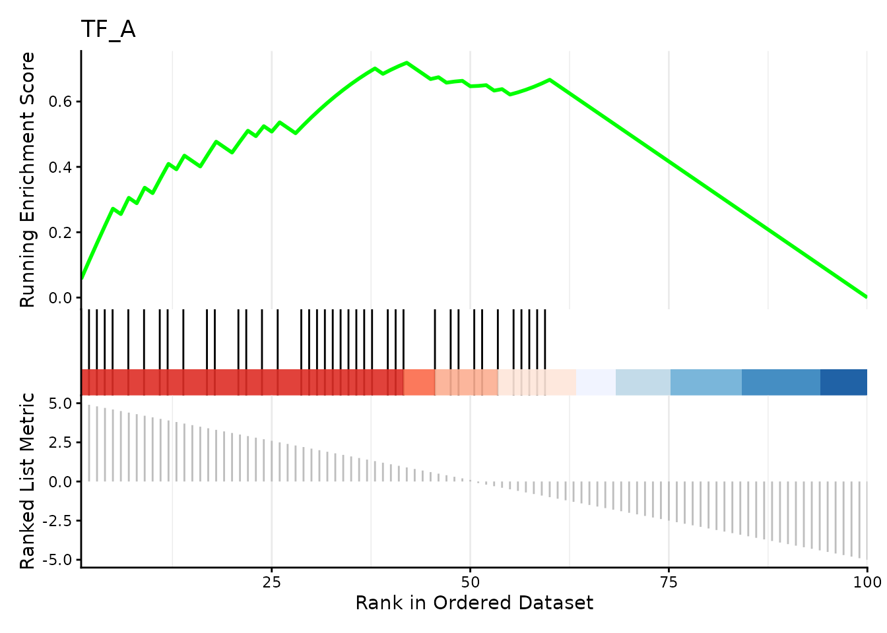

Peak-Set Enrichment Analysis with PeakSEA
Pierre-Paul Axisa
Source:vignettes/PeakSEA.Rmd
PeakSEA.RmdIntroduction
What is PeakSEA?

Peak-Set Enrichment Analysis (PeakSEA) is a computational method for identifying which peak sets — collections of genomic regions sharing a biological property — are over-represented among peaks that are differentially regulated between conditions.
PeakSEA adapts the Gene Set Enrichment Analysis (GSEA) framework (Subramanian et al., 2005) to genomic ranges data. The key conceptual differences are:
| GSEA | PeakSEA |
|---|---|
| Input: genes ranked by differential expression | Input: peaks ranked by differential accessibility |
| Gene sets (e.g. GO terms, pathways) | Peak sets (e.g. ATAC peaks, DHS, histone marks) |
| Membership defined by gene identifier | Membership defined by genomic coordinate overlap |
The approach can for example be applied to chromatin accessibility experiments where one wishes to ask: “Do peaks near binding sites of TF X tend to be more open in condition A?”
Algorithm overview
Ranked peaks (gr) Peak set database (gr_set)
chr1:1000-1499 log2FC=3.1 chr1:1050-1550 term="CTCF"
chr1:2000-2499 log2FC=2.7 ──► chr1:2100-2600 term="CTCF"
chr2:500-999 log2FC=-1.2 chr3:800-1300 term="H3K27ac"
... ...
│
│ 1. Overlap peaks with peak sets
▼
Annotate each peak with the term(s) it overlaps
│
│ 2. Build ranked gene-set input for GSEA
▼
TERM2GENE data frame + named ranked vector
│
│ 3. Run GSEA (clusterProfiler)
▼
gseaResult: NES, p-value, FDR per peak setInput data
Ranked peaks (gr)
gr must be a GRanges object whose metadata
contains a quantitative ranking metric. Common choices:
-
log2FCfrom a differential accessibility test (e.g. DESeq2, edgeR) - Signed
- Any continuous score where larger values indicate stronger signal in the condition of interest
library(PeakSEA)
library(plyranges)
set.seed(1979)
# 100 simulated ATAC-seq peaks with strong signal:
# peaks 1–50 are upregulated (positive log2FC)
# peaks 51–100 are downregulated (negative log2FC)
peaks <- data.frame(
seqnames = "chr1",
start = seq(1e4, by = 1e3, length.out = 100),
width = 500L,
log2FC = c(seq(5, 0.1, length.out = 50),
seq(-0.1, -5, length.out = 50)),
padj = runif(100, 0, 0.05)
) |>
plyranges::as_granges()
peaks
#> GRanges object with 100 ranges and 2 metadata columns:
#> seqnames ranges strand | log2FC padj
#> <Rle> <IRanges> <Rle> | <numeric> <numeric>
#> [1] chr1 10000-10499 * | 5.0 0.04544498
#> [2] chr1 11000-11499 * | 4.9 0.02410026
#> [3] chr1 12000-12499 * | 4.8 0.01264799
#> [4] chr1 13000-13499 * | 4.7 0.03642297
#> [5] chr1 14000-14499 * | 4.6 0.00827964
#> ... ... ... ... . ... ...
#> [96] chr1 105000-105499 * | -4.6 0.0119499
#> [97] chr1 106000-106499 * | -4.7 0.0375665
#> [98] chr1 107000-107499 * | -4.8 0.0201940
#> [99] chr1 108000-108499 * | -4.9 0.0232156
#> [100] chr1 109000-109499 * | -5.0 0.0108765
#> -------
#> seqinfo: 1 sequence from an unspecified genome; no seqlengthsPeak set database (gr_set)
gr_set is a GRanges object where every
range is annotated with a "term" metadata column naming the
peak set it belongs to. This mirrors the TERM2GENE format used by clusterProfiler.
Peak sets can represent, for example:
- TF binding sites from ChIP-seq experiments (ENCODE, ReMap)
- Chromatin states from histone mark ChIP-seq (Roadmap Epigenomics)
- DHS clusters from DNase-seq
- Any custom collection of genomic intervals
Public databases such as LOLA and AnnotationHub
provide pre-built region sets that can be used directly as
gr_set.
For this vignette we create two synthetic peak sets that mimic TF binding sites overlapping a known subset of our differential peaks:
# "TF_A" binding sites overlap the upregulated peaks
# "TF_B" binding sites overlap the downregulated peaks
set.seed(1979)
peak_sets <- c(
shift_right(peaks[sample(1:60, 40)], 100L) |> mutate(term = "TF_A"),
shift_right(peaks[sample(40:100, 40)], 100L) |> mutate(term = "TF_B")
)
peak_sets
#> GRanges object with 80 ranges and 3 metadata columns:
#> seqnames ranges strand | log2FC padj term
#> <Rle> <IRanges> <Rle> | <numeric> <numeric> <character>
#> [1] chr1 55100-55599 * | 0.5 0.0270753 TF_A
#> [2] chr1 46100-46599 * | 1.4 0.0462161 TF_A
#> [3] chr1 11100-11599 * | 4.9 0.0241003 TF_A
#> [4] chr1 68100-68599 * | -0.9 0.0210772 TF_A
#> [5] chr1 41100-41599 * | 1.9 0.0348013 TF_A
#> ... ... ... ... . ... ... ...
#> [76] chr1 56100-56599 * | 0.4 0.0308319 TF_B
#> [77] chr1 60100-60599 * | -0.1 0.0212098 TF_B
#> [78] chr1 50100-50599 * | 1.0 0.0279952 TF_B
#> [79] chr1 69100-69599 * | -1.0 0.0120466 TF_B
#> [80] chr1 98100-98599 * | -3.9 0.0105650 TF_B
#> -------
#> seqinfo: 1 sequence from an unspecified genome; no seqlengthsRunning PeakSEA
Call psea() with the ranked peaks, the name of the
ranking column, and the peak set database. Additional arguments are
forwarded to plyranges::join_overlap_left()
(e.g. maxgap, minoverlap) to control how
overlaps between gr and gr_set are
computed.
result <- psea(peaks, log2FC, peak_sets)
result
#> #
#> # Gene Set Enrichment Analysis
#> #
#> #...@organism unknown
#> #...@setType unknown
#> #...@keytype unknown
#> #...@geneList Named num [1:100] 5 4.9 4.8 4.7 4.6 4.5 4.4 4.3 4.2 4.1 ...
#> - attr(*, "names")= chr [1:100] "chr1_10000_10499" "chr1_11000_11499" "chr1_12000_12499" "chr1_13000_13499" ...
#> #...nPerm 1000
#> #...pvalues adjusted by 'BH' with cutoff < 0.05
#> #...2 enriched terms found
#> 'data.frame': 2 obs. of 12 variables:
#> $ ID : chr "TF_B" "TF_A"
#> $ Description : chr "TF_B" "TF_A"
#> $ setSize : int 40 40
#> $ enrichmentScore: num -0.759 0.719
#> $ NES : num -3.03 2.83
#> $ pvalue : num 1.62e-10 4.44e-09
#> $ p.adjust : num 3.25e-10 4.44e-09
#> $ qvalue : num NA NA
#> $ rank : int 45 42
#> $ leading_edge : chr "tags=80%, list=45%, signal=73%" "tags=72%, list=42%, signal=70%"
#> $ core_enrichment: chr "chr1_66000_66499/chr1_67000_67499/chr1_68000_68499/chr1_69000_69499/chr1_71000_71499/chr1_72000_72499/chr1_7300"| __truncated__ "chr1_10000_10499/chr1_11000_11499/chr1_12000_12499/chr1_13000_13499/chr1_14000_14499/chr1_16000_16499/chr1_1800"| __truncated__
#> $ log2err : num 0.827 0.761
#> #...Citation
#> S Xu, E Hu, Y Cai, Z Xie, X Luo, L Zhan, W Tang, Q Wang, B Liu, R Wang, W Xie, T Wu, L Xie, G Yu. Using clusterProfiler to characterize multiomics data. Nature Protocols. 2024, 19(11):3292-3320The result is a gseaResult object. The embedded result
table can be accessed as a data frame:
knitr::kable(as.data.frame(result)[, c("ID", "NES", "pvalue", "p.adjust")])| ID | NES | pvalue | p.adjust | |
|---|---|---|---|---|
| TF_B | TF_B | -3.026348 | 0 | 0 |
| TF_A | TF_A | 2.833434 | 0 | 0 |
Interpreting the output:
- NES > 0: the peak set is enriched among upregulated peaks (top of the ranked list).
- NES < 0: the peak set is enriched among downregulated peaks (bottom of the ranked list).
- p.adjust: FDR (Benjamini–Hochberg by default).
As expected, TF_A (associated with upregulated peaks) has a positive NES, while TF_B (associated with downregulated peaks) has a negative NES.
Visualisation
enrichplot
provides ready-made plots for gseaResult objects.
The enrichment curve for an individual peak set shows how its members are distributed across the ranked peak list:
if (requireNamespace("enrichplot", quietly = TRUE)) {
enrichplot::gseaplot2(result, geneSetID = "TF_A", title = "TF_A")
}
Building a peak set database from public resources
In a real analysis, gr_set is typically built from an
external database. Below is a minimal sketch using AnnotationHub:
library(AnnotationHub)
ah <- AnnotationHub()
# Search for ENCODE CTCF ChIP-seq peaks in hg38
ctcf_hits <- query(ah, c("CTCF", "Homo sapiens", "ENCODE"))
# Download Gm12878 cell line data
ctcf_gr <- ah[["AH22521"]]
# Annotate with a term column and combine multiple experiments
ctcf_gr$term <- "CTCF_ENCODE"
# Pass as gr_set
result <- psea(my_atac_peaks, log2FC, ctcf_gr)For collections of many peak sets, concatenate individual
GRanges objects with c() before passing to
psea().
Session information
sessionInfo()
#> R version 4.6.0 (2026-04-24)
#> Platform: x86_64-pc-linux-gnu
#> Running under: Ubuntu 24.04.4 LTS
#>
#> Matrix products: default
#> BLAS: /usr/lib/x86_64-linux-gnu/openblas-pthread/libblas.so.3
#> LAPACK: /usr/lib/x86_64-linux-gnu/openblas-pthread/libopenblasp-r0.3.26.so; LAPACK version 3.12.0
#>
#> locale:
#> [1] LC_CTYPE=C.UTF-8 LC_NUMERIC=C LC_TIME=C.UTF-8
#> [4] LC_COLLATE=C.UTF-8 LC_MONETARY=C.UTF-8 LC_MESSAGES=C.UTF-8
#> [7] LC_PAPER=C.UTF-8 LC_NAME=C LC_ADDRESS=C
#> [10] LC_TELEPHONE=C LC_MEASUREMENT=C.UTF-8 LC_IDENTIFICATION=C
#>
#> time zone: UTC
#> tzcode source: system (glibc)
#>
#> attached base packages:
#> [1] stats4 stats graphics grDevices utils datasets methods
#> [8] base
#>
#> other attached packages:
#> [1] plyranges_1.32.0 dplyr_1.2.1 GenomicRanges_1.64.0
#> [4] Seqinfo_1.2.0 IRanges_2.46.0 S4Vectors_0.50.1
#> [7] BiocGenerics_0.58.1 generics_0.1.4 PeakSEA_0.1.0
#> [10] BiocStyle_2.40.0
#>
#> loaded via a namespace (and not attached):
#> [1] RColorBrewer_1.1-3 jsonlite_2.0.0
#> [3] tidydr_0.0.6 magrittr_2.0.5
#> [5] ggtangle_0.1.2 farver_2.1.2
#> [7] rmarkdown_2.31 BiocIO_1.22.0
#> [9] fs_2.1.0 ragg_1.5.2
#> [11] vctrs_0.7.3 memoise_2.0.1
#> [13] Rsamtools_2.28.0 RCurl_1.98-1.18
#> [15] ggtree_4.2.0 htmltools_0.5.9
#> [17] S4Arrays_1.12.0 curl_7.1.0
#> [19] SparseArray_1.12.2 gridGraphics_0.5-1
#> [21] sass_0.4.10 bslib_0.11.0
#> [23] htmlwidgets_1.6.4 desc_1.4.3
#> [25] plyr_1.8.9 httr2_1.2.2
#> [27] cachem_1.1.0 GenomicAlignments_1.48.0
#> [29] igraph_2.3.1 lifecycle_1.0.5
#> [31] pkgconfig_2.0.3 Matrix_1.7-5
#> [33] R6_2.6.1 fastmap_1.2.0
#> [35] gson_0.1.0 MatrixGenerics_1.24.0
#> [37] digest_0.6.39 aplot_0.2.9
#> [39] enrichplot_1.32.0 ggnewscale_0.5.2
#> [41] patchwork_1.3.2 AnnotationDbi_1.74.0
#> [43] aisdk_1.1.0 ps_1.9.3
#> [45] textshaping_1.0.5 RSQLite_3.52.0
#> [47] labeling_0.4.3 httr_1.4.8
#> [49] polyclip_1.10-7 abind_1.4-8
#> [51] compiler_4.6.0 bit64_4.8.0
#> [53] fontquiver_0.2.1 withr_3.0.2
#> [55] S7_0.2.2 BiocParallel_1.46.0
#> [57] DBI_1.3.0 ggforce_0.5.0
#> [59] MASS_7.3-65 rappdirs_0.3.4
#> [61] DelayedArray_0.38.1 rjson_0.2.23
#> [63] tools_4.6.0 ape_5.8-1
#> [65] scatterpie_0.2.6 glue_1.8.1
#> [67] restfulr_0.0.16 callr_3.7.6
#> [69] nlme_3.1-169 GOSemSim_2.38.0
#> [71] grid_4.6.0 cluster_2.1.8.2
#> [73] reshape2_1.4.5 gtable_0.3.6
#> [75] tidyr_1.3.2 XVector_0.52.0
#> [77] ggrepel_0.9.8 pillar_1.11.1
#> [79] stringr_1.6.0 yulab.utils_0.2.4
#> [81] splines_4.6.0 tweenr_2.0.3
#> [83] treeio_1.36.1 lattice_0.22-9
#> [85] rtracklayer_1.72.0 bit_4.6.0
#> [87] tidyselect_1.2.1 fontLiberation_0.1.0
#> [89] GO.db_3.23.1 Biostrings_2.80.0
#> [91] knitr_1.51 fontBitstreamVera_0.1.1
#> [93] SummarizedExperiment_1.42.0 xfun_0.57
#> [95] Biobase_2.72.0 matrixStats_1.5.0
#> [97] stringi_1.8.7 lazyeval_0.2.3
#> [99] ggfun_0.2.0 yaml_2.3.12
#> [101] cigarillo_1.2.0 codetools_0.2-20
#> [103] evaluate_1.0.5 gdtools_0.5.0
#> [105] tibble_3.3.1 qvalue_2.44.0
#> [107] BiocManager_1.30.27 ggplotify_0.1.3
#> [109] cli_3.6.6 systemfonts_1.3.2
#> [111] processx_3.9.0 jquerylib_0.1.4
#> [113] Rcpp_1.1.1-1.1 png_0.1-9
#> [115] XML_3.99-0.23 parallel_4.6.0
#> [117] pkgdown_2.2.0 ggplot2_4.0.3
#> [119] blob_1.3.0 clusterProfiler_4.20.0
#> [121] DOSE_4.6.0 bitops_1.0-9
#> [123] tidytree_0.4.7 ggiraph_0.9.6
#> [125] enrichit_0.1.4 scales_1.4.0
#> [127] purrr_1.2.2 crayon_1.5.3
#> [129] rlang_1.2.0 KEGGREST_1.52.0